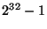

|
USENIX 2002 Annual Technical Conference, Freenix Track - Paper
[USENIX 2002 Technical Program Index]
Planned Extensions to the Linux Ext2/Ext3 FilesystemTheodore Y. Ts'o
AbstractThe ext2 filesystem was designed with the goal of expandability while maintaining compatibility. This paper describes ways in which advanced filesystem features can be added to the ext2 filesystem while retaining forwards and backwards compatibility as much as possible. Some of the filesystem extensions that are discussed include directory indexing, online resizing, an expanded inode, extended attributes and access control lists support, extensible inode tables, extent maps, and preallocation.
IntroductionLinux's second extended filesystem[1] (also known as ext2) was first introduced into the Linux kernel in January, 1993. At the time, it was a significant improvement over the previous filesystems used in the 0.97 and earlier kernels, the Minix and the ``Extended'' or (ext) filesystem. Fundamentally, the design of the ext2 filesystem is very similar to that of the BSD Fast Filesystem[2]. The ext2 filesystem is divided into block groups which are essentially identical to the FFS's cylinder group; each block group contains a copy of the superblock, allocation bitmaps, part of a fixed, statically allocated inode table, and data blocks which can be allocated for directories or files. Like most classic Unix filesystems, ext2/3 uses direct, indirect, double indirect, and triple indirection blocks to map logical block numbers to physical block numbers. Ext2's directory format is also essentially identical to traditional Unix filesystems in that a simple linked list data structure is used to store directory entries. Over the years, various improvements have been added to the ext2 filesystem. This has been facilitated by a number of superblock fields that were added to the ext2 filesystem just before Linux 2.0 was released. The most important of these fields, the compatibility bitmaps, enable new features to be added to the filesystem safely. There are three such compatibility bitmaps: read-write, read-only, and incompat. A kernel will mount a filesystem that has a bit in the read-write compatibility bitmask that it doesn't understand. However, an unknown bit in the read-only compatibility bitmap cause the kernel to only be willing to mount the filesystem read-only, and the kernel will refuse to mount in any way a filesystem with an unknown bit in the incompat bitmask. These bitmaps have allowed the ext2 filesystem to evolve in very clean fashion. Today, more developers than ever have expressed interest in working on the ext2/3 filesystem, and have wanted to add or integrate various new exciting features. Some of these features include: preallocation, journaling, extended attributes and access control lists, on-line resizing, tail-merging, and compression. Some of these features have yet to be merged into the mainline ext2 code base, or are only available in prototype form. In the case of the journaling support, although filesystems with journaling support are fully backwards compatible with non-journalled ext2 filesystems, the implementation required enough changes that the resulting filesystem has been named ext3. The goal of this paper is to discuss how these features might be added to the filesystem in a coordinated fashion. Many of these new features are expected of modern filesystems; the challenge is to add them while maintaining ext2/3's advantages of a relatively small and simple code base, robustness in the face of I/O errors, and high levels of forwards and backwards compatibility.
Proposed enhancements to the ext2 filesystem formatWe will discuss a number of extensions to the ext2/3 filesystem which will likely be implemented in the near future. For the most part, these extensions are independent of each other, and can be implemented in any order, although some extensions have synergistic effects. For example, two new features that will be described below, extent maps and persistent preallocation, are far more effective when used in combination with each other.
Directory indexingDaniel Phillips has implemented a directory indexing scheme using a fixed-depth tree with hashed keys[3]. This replaces the linear directory search algorithm currently in use with traditional ext2 filesystems, and significantly improves performance for very large directories (thousands of files in a single directory). The interior, or index, nodes in the tree are formatted to look like deleted directory entries, and the leaf nodes use the same format as existing ext2 directory blocks. As a result, read-only backwards compatibility is trivially achieved. Furthermore, starting in the Linux 2.2 kernel, whenever a directory is modified, the EXT2_BTREE_FL (since renamed EXT2_INDEX_FL) is cleared. This allows us to guarantee read/write compatibility with Linux 2.2 kernels, since the filesystem can detect that the internal indexing nodes are probably no longer consistent, and thus should be ignored until they can be reconstructed (via the e2fsck program). Daniel Phillip's directory indexing code is currently available as a set of patches versus the 2.4 ext2 code base. As of this writing, the patches still need to be merged with the ext3 journaling code base. In addition, there are plans to select a better hash function that has better distribution characteristics for filenames commonly found in workloads such as mail queue directories. There are also plans to add hinting information in the interior nodes of the tree to indicate that a particular leaf node is nearly empty and that its contents could be merged with an adjacent leaf node.
On-line filesystem resizingAndreas Dilger has implemented patches to the ext2 filesystem that support dynamically increasing the size of the filesystem while the filesystem is on-line. Before logical volume managers (LVMs) became available for Linux, off-line resizing tools such as resize2fs, which required that the filesystem be unmounted and checked using e2fsck first, were sufficient for most users' needs. However, with the advent of LVM systems that allow block devices to be dynamically grown, it is much more important filesystems to be able to grow and take advantage of new storage space which has been made available by the LVM subsystem without needing to unmount the filesystem first. Indeed, administrators of enterprise-class systems take such capabilities for granted. (Dynamically shrinking mounted filesystems is a much more difficult task, and most filesystems do not offer this functionality. For ext2/3 filesystems, filesystems can be shrunk using the off-line resizing tool resize2fs.) A disadvantage of the current ext2 resizing patches is that they require that the filesystem be prepared before the filesystem can be resized on-line. This preparation process, which must be done with the filesystem unmounted, finds the inodes using the blocks immediately following the block group descriptors, and relocates these blocks so they can be reserved for the resizing process. These blocks must be reserved since the current layout of the ext2 superblock and block group descriptors require an additional block group descriptor block for each 256MB, 2GB, or 16GB of disk space for filesystems with 1KB, 2KB, and 4KB blocksizes, respectively. Although the requirement for an off-line preparation step is quite inconvenient, this scheme does have the advantage that the filesystem format remains unmodified, so it is fully compatible with kernels that do not support on-line resizing. Still, if the system administrator knows in advance how much a filesystem may need to be grown, reserving blocks for use by the block group descriptors may be a workable solution. Requiring advance preparation of the filesystem can be obviated if we are willing to let the filesystem become incompatible with older kernels after it has been extended. Given that many 2.0 and 2.2 kernels do not support LVM devices (and so would be unable to read a filesystem stored on an LVM anyway), this may be acceptable. The change in the filesystem format replaces the current scheme where the superblock is followed by a variable-length set of block group descriptors. Instead, the superblock and a single block group descriptor block is placed at the beginning of the first, second, and last block groups in a meta-block group. A meta-block group is a collection of block groups which can be described by a single block group descriptor block. Since the size of the block group descriptor structure is 32 bytes, a meta-block group contains 32 block groups for filesystems with a 1KB block size, and 128 block groups for filesystems with a 4KB blocksize. Filesystems can either be created using this new block group descriptor layout, or existing filesystems can be resized on-line, and a new field in the superblock will indicate the first block group using this new layout. This new scheme is much more efficient, while retaining enough redundancy in case of hardware failures. Most importantly, it allows new block groups to be added to the filesystem without needing to change block group descriptors in the earlier parts of the disk. Hence, it should be very simple to write an ext2/3 filesystem extension using this design that provides on-line resizing capabilities.
An expanded inodeThe size of the on-disk inode in the ext2/3 filesystem has been 128 bytes long during its entire lifetime. Although we have been very careful about packing as much information as possible into the inode, we are finally getting to the point where there simply is not enough room for all of the extensions that people would like to add to the ext2/3 filesystem. Fortunately, just before the release of Linux 2.0, most of the work to allow for an expanded inode was added. As part of the changes to version 1 of the ext2 superblock, the size of the inode in the filesystem was added as a parameter in the superblock. The only restriction on the size of inode is that it must evenly divide the filesystem blocksize. Unfortunately, some safety-checking code which aborted the filesystem from being mounted if the inode size was not 128 bytes was never removed from the kernel. Hence, in order to support larger inodes, a small patch will have to made to the 2.0, 2.2, and 2.4 kernels. Fortunately the change is simple enough that it should be relatively easy to get the change accepted into production kernels. One of the most important features that requires additional space in the inode is the addition of sub-second resolution timestamps. This is needed because given today's very fast computers, storing file modification times with only second granularity is not sufficient for programs like make. (For example, if make can compile all of the object files for a library and create the library within a second, a subsequent make command will not be able to determine whether or not the library needs to be updated.) Another limitation imposed by the current inode field sizes is the use of a 16 bits for i_links_count, which limits the number of subdirectories that can be created in a single directory. The actual limit of 32,000 is smaller than what is possible with an unsigned 16-bit field, but even if the kernel were changed to allow 65,535 subdirectories, this would be too small for some users or applications. In addition, extra inode space can also enable support 64-bit block numbers. Currently, using 4KB blocks, the largest filesystem that ext2 can support is 16TB. Although this is larger than any commonly available individual disks, there certainly are RAID systems that export block devices which are larger than this size. Yet another future application that may require additional storage inside the inode is support for mandatory access control [4] (MAC) or audit labels. The NSA SE (Security-Enhanced) Linux[5] implementation requires a single 32-bit field for both purposes; other schemes may require two separate 32-bit fields to encode MAC and audit label. In order to maximize backwards compatibility, the inode will be expanded without changing the layout of the first 128 bytes. This allows for full backwards compatibility if the the new features in use are themselves backwards compatible -- for example, sub-second resolution timestamps. Doubling the inode size from 128 bytes to 256 bytes gives us room for 32 additional 32-bit fields, which is a lot of extra flexibility for new features. However, the 32 new fields can be very quickly consumed by designers proposing filesystem extensions. For example, adding support for 64-bit block pointers will consume almost half of the new fields. Hence, allocation of these new inode fields will have to be very carefully done. New filesystem features which do not have general applicability, or which require a large amount of space, will likely not receive space in the inode; instead they will likely have to use Extend Attribute storage instead.
Extended attributes, access control lists, and tail mergingOne of the more important new features found in modern filesystems is the ability to associate small amounts of custom metadata (commonly referred to as Extended Attributes) with files or directories. Some of the applications of Extended Attributes (EA) include Access Control Lists[6], MAC Security Labels[6], POSIX Capabilities[6], DMAPI/XDSM[7] (which is important for implementing Hierarchical Storage Management systems), and others. Andreas Gruenbacher has implemented ext2 extensions which add support for Extended Attributes and Access Control Lists to ext2. These patches, sometimes referred to as the Bestbits patches, since they are available at web site http://www.bestbits.at, have been relatively widely deployed, although they have not yet been merged into the main-line ext2/3 code base. The Bestbits implementation uses a full disk block to store each set of extended attributes data. If two or more inodes have an identical set of extended attributes, then they can share a single extended attribute block. This characteristic makes the Bestbits implementation extremely efficient for Access Control Lists (ACLs), since very often a large number of inodes will use the same ACL. For example, it is likely that inodes in a directory will share the same ACL. The Bestbits implementation allows inodes with the same ACL to share a common data structure on disk. This allows for a very efficient storage of ACLs, as well as providing an important performance boost, since caching shared ACLs is an effective way of speeding up access control checks, a common filesystem operation. Unfortunately, the Bestbits design is not very well suited for generic Extended Attributes, since the EA block can only be shared if all of the extended attributes are identical. So if every inode has some inode-unique EA (for example, a digital signature), then each inode will need to have its own EA block, and the overhead for using EAs may be unacceptably high. For this reason, it is likely that the mechanism for supporting ACLs may be different from the mechanisms used to support generic EAs. The performance requirements and storage efficiencies of ACL sharing justify seriously considering this option, even if it would be more aesthetically pleasing, and simpler, to use a single EA storage mechanism for both ACLs and generic EAs. There may be a few other filesystem extensions which require very fast access by the kernel; for example, mandatory access control (MAC) and audit labels, which need to be referenced every time an inode is manipulated or accessed. In these cases, however, as mentioned in the previous section, the simplest solution is to reserve an extra field or two in the expanded ext2 inode for these applications. One of more promising tactics for solving the EA storage problem is to combine it with Daniel Phillips's proposal of adding tail merging to the ext2 filesystem. Tail merging is the practice of storing the data contained in partially filled blocks at the end of files (called tails) in a single shared block. This shared block could also be used as a location of storing Extended Attributes. In fact, tail-merging can be generalized so that a tail is simply a special Extended Attribute. The topic of extended attributes is still a somewhat controversial area amongst the ext2 developers, for a number of reasons. First, there are many different ways in which EAs could be stored. Second, how EAs will be used is still somewhat unclear. Realistically, they are not used very often today, primarily because of portability concerns; EAs are not specified by any of the common Unix specifications: POSIX.1[8], SUS[9], etc., are not supported by file archiving tools such as tar and zip, and they cannot be exported over NFS (though the new NFSv4 standard[10] does include EA support.) Still, the best alternatives which seem to have been explored to date will probably keep the Bestbits approach exclusively for ACLs, and an approach where multiple inodes can utilize a single filesystem block to store tails and extended attributes. However, progress is being made: the linux-2.5 kernel now includes a standard API for accessing ACLs, and the popular Samba file-serving application can already use that API, if it is present.
Extensible inode tableWith the increase in size of the on-disk inode data structure, the overhead of the inode table naturally will be larger. This is compounded by the general practice of significantly over-provisioning the number of inodes in most Unix filesystems, since in general the number of inodes cannot be increased after the filesystem is created. While experienced system administrators may change the number of inodes when creating filesystems, the vast majority of filesystems generally use the defaults provided by mke2fs. If the filesystem can allocate new inodes dynamically, the overhead of the inode table can be reduced since there will no longer be a need to overallocate inodes. Expanding the inode table might seem to be a simple and straightforward operation, but there are a number of constraints that complicate things. We cannot simply increase the parameter indicating the number of inodes per block group, since that would require renumbering all of the inodes in the filesystem, which in turn would require scanning and modifying all of the directory entries in the filesystem. Also complicating matters is the fact that the inode number is currently used as part of the block and inode allocation algorithms. An inode's number, when divided by the filesystem's inodes_per_block_group parameter, results in the block group where the inode is stored. This is used as a hint when allocating blocks for that inode for better locality. Simply numbering new inodes just beyond the last used inode number will destroy this property. This presents problems especially if the filesystem may be dynamically resized, since growing the filesystem also grows the inode table, and the inode numbers used for the extensible inode table must not conflict with the inode numbers used when the filesystem is grown. One potential solution would be to extend the inode number to be 64 bits, and then encode the block group information explicitly into the high bits of the inode number. This would necessarily involve an incompatible change to the directory entry format. However, if we expand the block pointers to 64 bits to support petabyte-sized filesystems, we ultimately may wish to support more than inodes in a filesystem anyway. Unfortunately, there are two major implementation problems with expanding the inode number which make pursuit of this approach unlikely. First, the size of the inode number in struct stat is 32 bits on 32-bit platforms; hence, user space programs which depend on different inodes having unique inode numbers may have this assumption violated. Secondly, the current ext2/3 implementation relies on internal kernel routines which assume a 32-bit inode number. In order to use a 64-bit inode number, these routines would have to be duplicated and modified to support 64-bit inode numbers. Another potential solution to this problem is to utilize inode numbers starting from the end of the inode space (i.e., starting from  and working downwards) for dynamically-allocated inodes, and using an inode to allocate space for these extended inodes. For the purposes of the block allocation algorithm, the extended inode's block group affiliation can be stored in a field in the inode. However, the location of the extended inode in this scheme could no longer be determined by examining its inode number, so the location of the inode on disk would no longer be close to the data blocks of the inode. This would result in a performance penalty for using extended inodes (since the location of the inode and the location of its data blocks would no longer necessarily be close together), but hopefully the penalty would not be too great. Some initial experiments which grouped the inode tables of meta-block groups together showed a very small performance penalty, although some additional benchmarking is necessary. (A simple experiment would be to modify the block allocation algorithms to deliberately allocate blocks in a different block group from the inode, and to measure the performance degradation this change would cause.)
Extent mapsThe ext2 filesystem uses direct, indirect, double indirect, and triple indirection blocks to map file offsets to on-disk blocks, like most classical Unix filesystems. Unfortunately, the direct/indirect block scheme is inefficient for large files. This can be easily demonstrated by deleting a very large file, and noting how long that operation can take. Fortunately, ext2 block allocation algorithms tend to be very successful at avoiding fragmentation and in allocating contiguous data blocks for files. For most Linux filesystems in production use today, the percentage of non-contiguous files reported by e2fsck is generally less than 10%. This means that in general, over 90% of the files on an ext2 filesystem only require a single extent map to describe all of their data blocks. The extent map would be encoded in a structure like this:
struct ext2_extent {
__u64 logical_block;
__u64 physical_block;
__u32 count;
};
Using such a structure, it becomes possible to efficiently encode the information, ``Logical block 1024 (and following 3000 blocks) can be found starting at physical block 6536.'' The vast majority of files in a typical Linux system will only need a few extents to describe all of their logical to physical block mapping, and so most of the time, these extent maps could be stored in the inode's direct blocks. However, extent maps do not work well in certain pathalogical cases, such as sparse files with random allocation patterns. There are two ways that we can deal with these sorts of cases. The traditional method is to store the extent maps in a B-tree or related data structure, indexed by the logical block number. If we pursue this option, it will not be necessary to use the full balancing requirements of B-trees; we can use similar design choices to those made by the directory indexing design to significantly simplify a B-tree implementation: using a fixed depth tree, not rotating nodes during inserts, and not worrying about rebalancing the tree after operations (such as truncate) which remove objects from the tree. There is however an even simpler way of implementing extents, which is to ignore the pathological case altogether. Today, very few files are sparse; even most DBM/DB implementations avoid using sparse files. In this simplification, files with one or two extents can store the extent information in the inode, using the fields that were previously reserved for the direct blocks in the inode. For files with more extents than that, the inode will contain a pointer to a single extent-map block. (The single extent-map block can look like a single leaf belonging to an extent-map tree, so this approach could be later extended to support a full extent-map tree if this proves necessary.) If the file contains more extent maps than can fit in the single extent-map block, then indirect, double-indirect, and triple-indirect blocks could be used to store the remainder of the block pointers. This solution is appealing, since for the vast majority of files, a single extent map is more than sufficient, and there is no need to adding a lot of complexity for what is normally a very rare case. The one potential problem with this simplified solution is that for very large files (over 25 gigabytes on a filesystem using a 4KB blocksize), a single extent map may not be enough space if filesystem metadata located at the beginning of each block group is separating contiguous chunks of disk space. Furthermore, if the filesystem is badly fragmented, then the extent map may fill even more quickly, necessitating a fall back to the old direct/double indirect block allocation scheme. So if this simplification is adopted, preallocation becomes much more important to ensure that these large block allocations happen contiguously, not just for performance reasons, but to avoid overflowing the space in a single extent map block. We can solve the first problem of metadata (inode tables, block and inode bitmaps) located at the beginning of each block group breaking up contiguous allocations by solved by moving all the metadata out of the way. We have tried implementing this scheme by moving the inode tables and allocation bitmaps to the beginning of a meta-block group. The performance penalty of moving the inode table slightly farther away from the data blocks related to it was negligible. Indeed, for some workloads, performance was actually slightly improved by grouping the metadata together. Making this change does not require a format change to the filesystem, but merely a change in the allocation algorithms used by the mke2fs program. However, the kernel does have some sanity-checking code that needs to be removed so that the kernel would not reject the mount. A very simple patch to weaken the checks in ext3_check_descriptors() was written for the 2.4 kernel. Patches to disable this sanity check, as well as the inode size limitation, will be available for all commonly used Linux kernel branches at http://e2fsprogs.sourceforge.net/ext2.html.
Preallocation for contiguous filesFor multimedia files, where performance is important, it is very useful to be able to ask the system to allocate the blocks in advance, preferably contiguously if possible. When the blocks are allocated, it is desirable if they do not need to be zeroed in advanced, since for a 4GB file (to hold a DVD image, for example), zeroing 4GB worth of pre-allocated blocks would take a long time. Ext2 had support for a limited amount of preallocation (usually only a handful of blocks, and the preallocated blocks were released when the file was closed). Ext3 currently has no preallocation support at all; the feature was removed in order to make adding journaling support simpler. However, it is clear that in the future, we will need to add a more significant amount of preallocation support to the ext2/ext3 filesystem. In order to notify the filesystem that space should be preallocated, there are two interfaces that could be used. The POSIX specification leaves explicitly undefined the behavior of ftruncate() when the argument passed to ftruncate is larger than the file's current size. However, the X/Open System Interface developed by the Austin Group[11] states if the size passed to ftruncate() is larger than the current file size, the file should be extended to the requested size. The ext2/ext3 can use ftruncate as a hint that space should be preallocated for the requested size. In addition to multimedia files, there are also certain types of files whose growth characteristics require persistent preallocation beyond the close of the inode. Examples of such slow-growth files include log files and Unix mail files, which are appended to slowly, by different processes. For these types of files, the ext2 behavior of discarding preallocated blocks when the last file descriptor for an inode is closed is not sufficient. On the other hand, retaining preallocated blocks for all inodes is also not desirable, as it increases fragmentation and can tie up a large number of blocks that will never be used. One proposal would be to allow certain directories and files to be tagged with an attribute indicating that they are slow-growth files, and so the filesystem should keep preallocated blocks available for these files. Simply setting this flag on the /var/log and /var/mail directories (so that newly created files would also have this flag set, and be considered slow-growth files) would likely make a big difference. It may also be possible to heuristically determine that a file should be treated as a slow-growth file by noting how many times it has been closed, and then re-opened and had data appended to it. If this happens more than once or twice, we can assume that it would be profitable to treat the file as a slow-growth file. Files opened with the O_APPEND flag (which is rarely used for regular file I/O) could also be assumed to be have slow-growth characteristics. The types of preallocation described above are all non-persistent preallocation schemes. That is, the pre-allocated blocks are released if the filesystem is unmounted or if the system is rebooted. It is also possible to implement persistent preallocations (which is required for posix_fallocate), where the blocks are reserved on disk, and but not necessarily pre-zeroed. To support this feature, a 64-bit field in the inode will have to be allocated out of the newly expanded ext2 inode. This field, called the high watermark, specifies the last address that has actually been written to by the user. Attempts to read from the inode past this point must cause a zero-filled page to be returned, in order to avoid a security problem of exposing previously written and deleted data. Of course, if the user seeks past the high watermark and writes a block, the kernel must at that point zero all of the blocks between the high watermark and the point where the write was attempted. Persistent preallocation may not be very important, since few applications require guarantees about preallocated contiguous allocations (even in the face of an unexpected system shutdown). As a result, persistent preallocation will likely be a very low-priority item to implement. The benefits of allowing (non-persistent) preallocation in ext3 filesystems are far greater, since they address the allocation needs of both slow-growth log and mail spool files, as well as large multimedia files.
Compatibility issuesWhereas many of the new features described in this paper are fully backwards compatible, some of these proposed new features introduce various different types of incompatibility. For example, even though an older kernel would be able to read a filesystem containing files with high watermark pointers to implement persistent preallocation, a kernel which did not know to check the high watermark pointer could return uninitialized data, which could be a security breach. Because of this security issue, the persistent preallocation feature must use a bit in the incompat compatibility bitmask in the superblock. Moreover, there are some changes that simply require incompatible filesystem feature bits due to the fundamental changes in the filesystem format. A good example of such a feature is the extent map changes. Older kernels will not know how to interpret extent maps. In the past, when we have made incompatible changes, e2fsprogs has provided conversion utilities (usually as part of the tune2fs and e2fsck programs) to add and remove new features to filesystems. Other changes, such as expanding the size of the on-disk inode structures, will require the use of technology already found in resize2fs to relocate data blocks belonging to inodes to other locations on disk to make room for growing system data areas. Andreas Dilger has also suggested an interesting way of providing the largest amount of backwards compatibility as possible by adding compatibility flags on a per-inode basis. So if there are only a few files which are using persistent-preallocation or extent maps, the filesystem could be mounted without causing problems for the majority of the files which are not using those features. Table 1 shows which of the proposed new ext2 features are backwards compatible and which are not. Each incompatible feature can be enabled or disabled on a per-filesystem (and perhaps per-inode basis); in addition, for many of these incompatible changes, it would be very simple to make backports of these features available to older kernels so that they would be able to use filesystems with some of these new features.
Implementation issuesNearly all of the extensions described here can be implemented independently of the others. This allows for distributed development, which is consonant with the general Linux development model. The only real dependency that exists is that a number of the new features, such as subsecond timestamps, persistent preallocation, and 64-bit block numbers require an expanded inode. Hence, an early priority will be enhancing resize2fs so that it can double the size of the inode structure on disk. Another high priority task is to make available kernel patches for all commonly used kernel versions (at least for the 2.2 and 2.4 kernels) that remove the safety checks that prevent current kernels from mounting filesystems with expanded inodes. The sooner these patches are available, the sooner they can get adopted and installed on production systems. This will ease the transition and compatibility issues immensely.
Factorization of ext2/3 codeOne of the reasons why we have separate code bases for ext2 and ext3 is that journaling adds a lot of complexity to a number of code paths, especially in the block allocation code. Factoring out these changes so that journaling and non-journaling variants of block allocation functions, inode modification routines, etc., could be selected via function pointers and an operations table data structure will clean up the ext2/3 implementation. This will allow us to have a single code base which can support filesystems both with and without journaling.
Source control issuesNow that as many as six developers are experimenting with various ext2/3 extensions, some kind of source control system is needed so that each developer could have their own source-controlled playground to develop their own changes, and also allow them to easily merge their changes with updates in the development tree. Up until now we have been using CVS. However, our experience with using CVS for maintaining ext3 kernel code has shown that CVS does not deal well with a large number of branches. Keeping track of a large number of branches is very difficult under CVS; it does not have any native visualization tools, and merging changes between different branches is a manual process which is highly error-prone. We have started using bitkeeper to maintain the e2fsprogs user space utilities, and this experiment has been very successful. In addition, the master 2.4 and 2.5 Linux kernels are being maintained using bitkeeper, as Linus Torvalds and many other kernel developers have found that it best fits the highly distributed nature of development of the Linux kernel. For these reasons, the authors are currently strongly exploring the possibility of using bitkeeper as the source control mechanism for the ext2/3 kernel code. The open-source subversion source control system may also be viable in the future: it promises good support for repeated merges between development branches, but it is still quite immature compared to bitkeeper and CVS.
ConclusionsIn this paper, we have reviewed some of the extensions to the ext2/3 filesystem that are currently being planned. Some of these designs may change while the extensions are being implemented. Still, it is useful to work through design issues before attempting to put code to paper (or to emacs or vi buffers, as appropriate), since a number of these extensions interact with one another, and create dependencies amongst themselves. In addition, there are number of other optimizations being planned for the Linux 2.5 kernel that are not strictly part of the ext2 filesystem, but which will significantly impact its performance. Examples of such planned optimizations in the VM layer include write-behind optimizations and support for the O_DIRECT open flag. Other topics that we will likely explore in the future include allowing multiple filesystems to share a journal device, better allocation algorithms that take into account RAID configurations, and large (32KB or 64KB) blocksizes. Finally, perhaps it would be appropriate to answer at this point a common question. Given that there are many new, modern filesystems such as XFS with advanced features, why are we working on adding new features to ext2/3? There are a number of answers to that question:
AcknowledgmentsThere have many people who have worked on the ext2 and ext3 filesystems, and their contributions both in terms of code and design discussions have been invaluable. Those in particular who deserve special mention include Andrew Morton and Peter Braam (who both helped with the port of ext3 to 2.4), Daniel Phillips (who implemented the tail-merging and directory indexing patches), Andreas Dilger (who contributed numerous patches to ext3 and to e2fsprogs), and Al Viro (who has fixed up and significantly improved the truncate and directory page cache). All of these people also contributed extensively to discussions on the ext2-devel@lists.sourceforge.net mailing list, and helped to refine the design plans found in this paper. Thank you all very much indeed.
Bibliography
Theodore Tso 2002-04-16 |
|
This paper was originally published in the Proceedings of the FREENIX Track: 2002 USENIX Annual Technical Conference, June 10-15, 2002, Monterey Conference Center, Monterey, California, USA.
Last changed: 16 May 2002 ml |
|